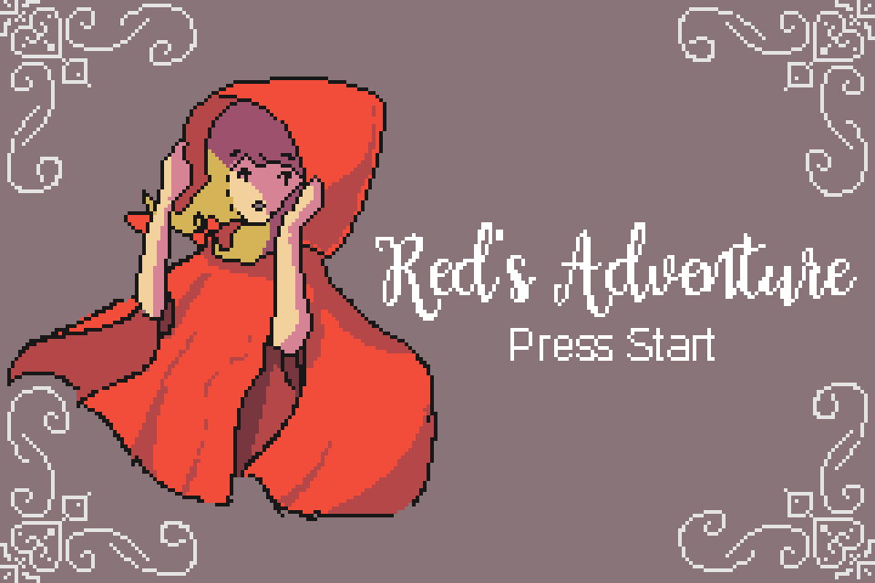
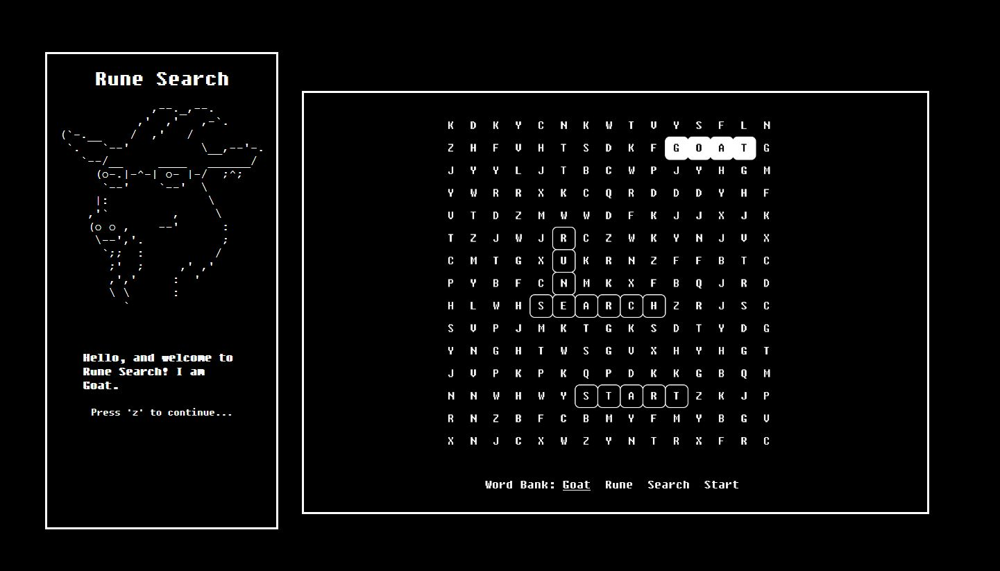
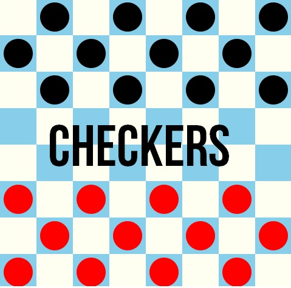

2019 - Red's Adventure 
Built using C
A gba game programmed in C and created in mode3(bitmap mode). The game was made in the span of a week, and all assets were handdrawn. A link to download the playable gba file can be found here!
2019 - Rune Search 
Designed UI and helped create assests
A web game described as "half rouge-like and half word search" with the player as a magical goat! The project was led by Will Martin. I helped with designing the UI as well as creating several ascii art assets. Play the game here!
2018 - Checkers
Built using Javafx
A checkers game programmed using Javafx. The game was part of a larger group project consisting of two games Checkers and Breakout combined in an 'arcade-like' program. I was tasked to do Checkers, and my partner was tasked to do Breakout.